Benjamin Ducke (benducke@compuserve.de)
This Document provides instructions for using GEM and for writing portable GRASS extensions to be installed with GEM.
GRASS GIS (www.grass.itc.it) is a powerful, modularized open source Geographic Information System. The base distribution comes with hundreds of useful modules. However, there are a few flaws in the design:
From the GRASS user's perspective GEM can be used to:
The GEM program itself is a relatively simple frontend written in ANSI C that interacts with more complex installation scripts (make system) contained in each individual extension package. These scripts are a scaled-down and slightly modified version of the original GRASS 6 make system. Files in an extension package correspond 1:1 with the layout of the original GRASS source tree, the only difference being that an extension package only contains source code for the add-on modules plus a few things that are needed to setup the source code, parse HTML documentation etc.
A GRASS extension is essentially a minimal replication of the GRASS source tree including all necessary makefiles. It contains only the source code for a few modules that constitute the extensions. On the top level, you will find a number of ASCII files that contain the information gem needs to manage the extension. All information is managed in plain ASCII format.
Installed extensions will be registered in $(PATH_TO_GRASS)/etc/extensions.db. This registry file also contains version and dependencies information. Each extension should also provide an uninstall script to be run when the user wants to get rid of that extension.
They are stored in $(PATH_TO_GRASS)/etc/uninstall.<extension_name>.
Extension may add a submenu to the GIS Manager. The first extension installed creates an additional "Xtns" top level menu under which each extension can register a nested submenu.
Gem modifies $(PATH_TO_GRASS)/etc/d.m/menu.tcl for this.
The extension source code is in the src directory, along with all the necessary makefiles. Other directories may hold pre-compiled binaries and should be named appropriately (win32, macosx, ...).
Extensions may provide code for C language modules and libraries, scripts and HTML documentation.
GEM compiles and install add-on modules using the sources and makefiles contained in the extension.
For the user, GEM is really simple to use. All that is required is a download of the extension package to install and knowledge of where the local GRASS installation resides. If the user does not have permission to install new files in the GRASS installation directory, a password for a user with sufficient permissions will be required (see next section).
Developers of add-on modules will (hopefully) also find the process of migrating their work to a GEM extension package a matter of minutes and well worth the effort. More information for developers can be found in section 4 of this document.
Note: in addition to GEM itself, you will probably want to install GNU C compiler and maketools for compilation. Tar, gzip, unzip, bunzip2 for handling various archive formats. Wget for fetching extensions from the internet.
You can download GEM source code and binaries for several different platforms from the author's homepage (http://www.uni-kiel.de/ufg/index1.htm). Check the links at the bottom of the page. You will also find several extension packages for installation with GEM.
Download the file gem-someversion.tar.gz to a convenient location, unpack it and change into the newly created directory:
cd gem-someversion
ls
If you want (and have the required permissions), you can copy the file to a directory for system-wide binaries so you can call GEM from anywhere without having to prefix a directory path (./ in the example above) by typing just gem:
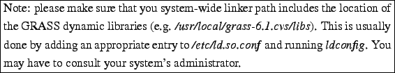
You must have a C compiler, preferably GNU C, and the corresponding make tools installed. Most Linux/Unix systems should come with these installed. If not, use your distributions package manager to install them (look for something like ``Development tools''). Mac OS X and Cygwin users: see OS specific notes in section A.
Download the file gem-someversion.tar.gz to a convenient location, unpack it and change into the newly created directory:
cd gem-someversion
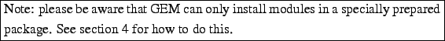
For the impatient. To install an extension into your running version of GRASS: start a GRASS session, download an extension and install it from inside the GRASS session using:
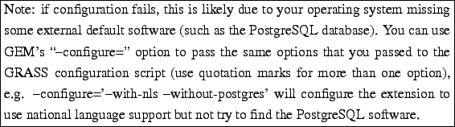
To finish the installation, GEM needs to write the extension's new module files into the directory where GRASS has been installed. In many cases, this will be a system directory with restricted write access. Provide the superuser password if GEM asks you for it. Restart GIS Manager and look in the ``Xtns'' menu for new modules (some modules may not provide GIS Manager entries). If anything goes wrong or confuses you: read the rest of this section!
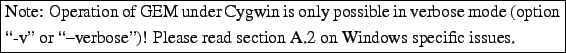
This section will show you how to use GEM to perform basic things: installing, querying and removing (un-installing) extensions for GRASS GIS. For the sake of simplicity, I will assume that your GRASS installation resides in /usr/local/grass-6.0.0 and you may have to adjust this path in the examples below, so that it reflects your individual setup (Mac OS X users: see notes on system specific issues in section A.1 for how to find the path to your installation). Also, the extension package used in the following examples is called RasterTools.tar.gz and is in ``tar'd gzip'' format. Replace this with the name of the extension you wish to install as needed.
I will further assume that you (or your system's administrator) have copied the executable gem6 into a directory from where it can be started system-wide (such as /usr/local/bin) without having to prefix the path to the executable (see instructions in 3.1).
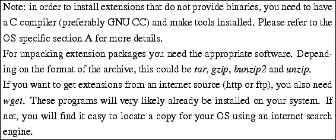
GEM understands short and long options. Long options are just a more legible version of the short options, which is why I will use them in this document. E.g. ``-i'' is a short option that does exactly the same as ``-install=''. To see all options, short and long, simply call GEM without any options or ``-help'':
You will notice that GEM knows a special sort of options called ``actions'' this are options that cause GEM to operate in some way on the extension. The regular ``options'' are just used to modify the way GEM works.
To install a module into your GRASS installation (in this example /usr/local/grass-6.0.0), simply pass the name of the archive containing the extension or the directory with the unpacked files to the ``-install='' action and supply the path to the GRASS installation for which you wish to install the extension (using the ``-grass='' option):
If any errors occur, use option ``-v'' (``-verbose'') to see what is going on.
By default, the ``-install='' action performs an installation from source code. This will first configure the sources for your system's individual setup, then compile the source code into binaries, finally install them in the appropriate locations.
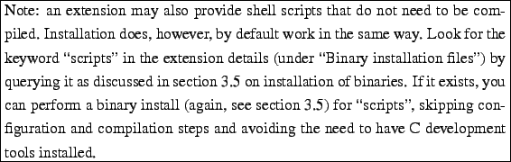
If you invoke GEM from inside a running GRASS session, you can ommit the ``-grass='' option. GEM will then automatically install the extension into the GRASS installation that is currently running. We will assume this to be true for the following usage examples, as it saves me some typing work (...).
The new modules provided by the extension should be available to you immediately from within a GRASS session. The extension will be registered as ``RasterTools''. To get a list of newly installed GRASS modules:
Some extensions may provide menu entries for a GRASS GUI. Currently, d.m and gis.m are supported by GEM. Both of these GUIs need to be restarted. If the extension provides menu entries, you will find them under ``Xtns'' in the main menu bar.
If you want to know details about an extension before you install it, you can also query the extension package itself:
You can also un-install an extension to remove it from the system-wide GRASS installation (take name from list produced by above command). Again, you need write-access to the GRASS installation dir.
Some extensions may provide pre-compiled binary files for one or more operating systems. A user wishing to install an extension that provides binaries for his OS does not need to have C development tools installed. This may frequently be the case for users of Mac OS X and Cygwin (but see OS specific issues in section A).
It is recommended for all users of GRASS and GEM to install C development tools and install extensions from sources (the regular way as described in section 3.4). This will compile the source code into custom binaries that are optimally tailored to your system. However, there may be circumstances that make using pre-compiled binaries appear more convenient or even unavoidable.
You can check whether an extension provides such pre-compiled binary files for your OS by querying the extension package:
Use the option "-binary=" in conjunction with the "-install=" action to install the binaries you deem right:
If you have chosen a wrong set of binaries, new commandes will simply fail to start when you try to use them.
Option ``-f'' (``-force'') can be used to force GEM to re-install an existing extension, over-writing anything that was installed previously. This is not a recommended thing to do! There is currently no clean updating mechanism for GEM, so you are advised to first de-install the existing extension (which might involve de-installing all dependent extensions first), then install freshly.
You can also download and install, query etc. an extension packages directly from an internet source (http or ftp), provided that wget is installed (http://www.gnu.org/software/wget/wget.html):
Information about all installed extensions is stored in the file etc/extensions.db in your system-wide GRASS installation directory. This file contains the names, versions and dependencies of all installed extensions. Some extensions may need another extension or a particular GRASS version to be installed before it can function properly. If an extension's dependencies are not met, GEM will abort the installation and you need to first install all required software.
Querying an extension package will let you see the dependencies it has before you attempt to install (under ``Dependencies''):
You can force installation of extensions with unmatched dependencies by using the "-force" option. This is not a recommended thing to do!
GEM also guards against de-installation of extensions that are still needed by other extensions still present on the system. You need to un-install all dependent extension in reverse order of installation first.
There is currently no clean updating mechanism for GEM, so you are advised to first un-install an existing extension (which might involve de-installing all dependent extensions first) before you install a newer version.
Do not edit extensions.db manually, unless you now exactly what you are doing!
Converting existing GRASS add-on modules to a GEM extension package is easy. Extensions may provide C program code and headers for modules and libraries, shell scripts and tcl code. Basically anything that you find a directory for in the skeleton package.
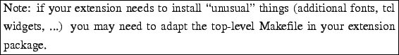
The skeleton package (see section 4.2) is an almost complete GRASS extension. Use this as a template for starting new extensions or migrating existing source code from the GRASS source tree. All you need to do is copy your source files, scripts etc. into the appropriate places in the src directory (you will find that everything mirrors the way GRASS sources are organized) and fill necessary information into the toplevel ASCII files.
GEM can configure, compile and install extensions from a plain directory. Just provide the name of the directory for all actions. This allows you to conveniently keep all your sources and documentations in a small, portable directory outside the GRASS source tree and maintain everything in there.
You can test whether an extension compiles and installs on your system by using the ``-test='' action. This will perform all steps except for actually copying the files to their destinations.
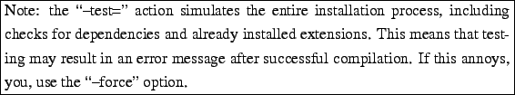
The ``-clean='' action merely exists for the convenience of the developer: it performs a make clean in the extensions src directory.
Two more options exist to make life easier for developers: ``-skip-config'' to skip source code configuration for speeding up the testing. and ``-options='' (sorry about the awful name). Everything you specify here will be passed through to the C compiler upon compilation of your extension.
GEM also allows you to use any commands in place of the standard GNU configure and make tools. Specifiy the programs you want to use with the ``-config-cmd='' and ``make-cmd='' options.
The skeleton package is an almost complete GRASS extension. Use this as a template for starting new extensions or migrating existing source code from the GRASS source tree. All you need to do is copy your source files, scripts etc. into the appropriate places in the src directory (you will find that everything mirrors the way GRASS sources are organized) and fill necessary information into the toplevel ASCII files (see following sections).
You will find the skeleton package files in the subdirectory $GISBASE/etc/gem/skeleton (replace $GISBASE with the path to your GRASS 6.1 install, e.g. /usr/local/grass-6.1.cvs).
Look into the skeleton extension directory and open the ASCII files with a texteditor of your choice. You will find lots of comments that help you make sense of their contents. You can put comments starting with "#" at the beginning of a line or at the end in any file. These will be filtered out upon parsing of the file by GEM.
The skeleton contains a copy of the GPL as the default license. Creators of new extensions need to be aware of this! Either insert the name of your extension at the end of that license or provide your own custom licensing information.
You will find that your makefiles for individual moduls and libs can stay largely the way they are. One thing that may need to be adjusted is the MODULE_TOPDIR = .. statement that points to the location of the global GRASS makefile include directory. Also be aware that references to other include files libraries etc. that you reference in a makefile may have to be adjusted depending on how you decide to structure the source for your extension.
Take a look at the example module in src/raster/r.example.
It is extremely important to provide sufficient documentation about your extension's intended use, functionality, dependencies and shortcomings!
A number of ASCII files in the toplevel extension directory store all this information about an extension. They must be edited appropriately. GEM's ``-query='', ``-license='' and ``-details='' actions will dump their contents to the screen. These are:
authors, bugs, commands, depends, description, entries-gisman, entries-gisman2, headers, id, info, libs, license and name and version.
Files authors, bugs, commands, description, headers, id, info, libs: These files are merely for the user's information. Their contents will be dumped by the ``-query='' action. Much of this information will also go into the system-wide GRASS HTML help. Each extension registers its own section in $GISBASE/docs/html/index.html which links to an individual index page for that extension. This allows the user convenient access to inidividual modules' help pages as well as the contents of files description and info.
Because of this, some description files can contain HTML tags. These will be ignored when the user queries the extension on a console but will be interpreted when the same information is accessed from the GRASS HTML offline help. There are two important exceptions: <p> and <br> will produce paragraph and line breaks for console output, as well.
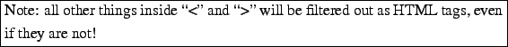
Take a look at the files in the skeleton package for their individual meanings and format. Files that will be parsed for HTML tags are: authors, bugs, description and info.
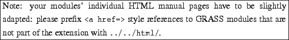
File license: this will be display by the ``-license='' action.
File info: this will be displayed by the ``-details='' action and also integrated in the HTML index page for the extension.
Files depends, name and version: see section 4.5.
Files entries-gisman and entries-gisman2: see section 4.7.
The file name is a very crucial one! It contains the name under which GEM will register your extension. Please see 4.12 about naming conventions!
The file version stores the current version number of your extension. Make sure to keep this up-to-date prior to new releases.
If your extension depends on other extensions or a specific GRASS version, you can state this in the depends file. See the example in the skeleton extension for details. GEM will respect this information when a user tries to install or uninstall any extension.
Two files remain that have not been discussed yet: uninstall and post.
The uninstall file is a shell script that contains all commands necessary to clean up the GRASS installation after the user invoked GEM with the ``-uninstall='' action to un-install an extension. It takes care of deleting module binaries, HTML manpages, C include files and libraries provided by that extension from $GISBASE. In the most simple case, all you need to do is provide the list of your extension's user commands in EXT_MODULES=''''. For more complex extensions, you may have to provide additional files to delete or even customize uninstall. Take a look at the file in the skeleton extension to see what it does in detail.
GEM will copy your extension's uninstall script to $GISBASE/etc/uninstall.ExtensionName and it will be run from there by the ``-uninstall='' action.
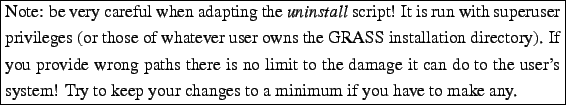
The post script can be used to customise many actions in case your extension needs anything not provided by the regular make system or GEM description files. GEM exports a number of environment variables depending on what options and actions the user chose to run it with. The post script is automatically run after many actions and can be used to carry out custom tasks depending on the type of action. Take a look at the file provided by the skeletion extension to see what can be done.
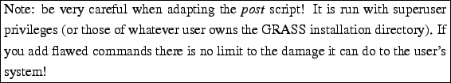
GEM currently supports the installation of menu items for GIS Manager: the old version (d.m) and the new on (gis.m) are both support. Support for d.m menus is quite limited. You can only create one submenu and any number of menu items and separators inside of it. Menus for gis.m can contain any tk menu code. You can have as many levels of menu hierarchy as you like. See the examples in the skeleton extension to learn how they are organized.
The file responsible for creating d.m menu entries is entries-gisman. For gis.m it is entries-gisman2. For d.m menus, entries-gisman is directly merged into $GISBASE/etc/dm/menu.tcl. GEM will also place a copy of the original entries-gisman file into $GISBASE/etc/dm/gem-entries. This is used by the ``-restore'' action to restore d.m menus in case the user updates the GRASS installation and menu.tcl gets overwritten. For the purpose of un-installation, markers are stored as comments at the end of menu.tcl. This allows the ``-uninstall='' action to find an extensions menu entries and delete them. The file menu.tcl will be backed up as menu.tcl.gem.bak so a user can restore it if anything should wrong.
Things work much simpler for gis.m. In this case, $GISBASE/etc/gm/gmmenu.tcl dynamically re-builds the ``Xtns'' menu upon start-up. If entries-gisman2 exists in an extension package, GEM will make sure to create an directory Xtns in $GISBASE/etc/gm/ and copies entries-gisman2 into it, renaming it to the extension's name. From these files, gis.m will automatically build the ``Xtns'' menu via some parsing code in gmmenu.tcl.
Your submenu will be sorted in under the "Xtns" menu in alphabetical position according to either the name of the top level menu item (d.m) or the extension name (gis.m) it is smart to keep both the same (see guidelines in section 4.12).
Both d.m and gis.m need to be restarted to see the effects of installing new menu entries.
If an extension is to be installed from source code, it needs to be configured first. This is done by the script configure in the src directory of the extension package. The original GRASS configure script checks the system for a number of optional dependencies, such as PostgreSQL or Tcl/Tk which are not strictly required to run GRASS but may greatly enhance the sytem's functionality. Certain GRASS modules may or may not be compiled depending on what optional sofware is installed on the system (and correctly detected by the configure script). In certain situations (such as a missing PostgreSQL installation), the GRASS configure script will fail and compilation not start unless the user specifies explicitly that e.g. PostgreSQL support is not wanted.
If one or more modules of an extension need a certain external software dependency to be satisfied, the extension author needs to modify the configure script of that extension accordingly.
E.g. if PostgreSQL is an absolute requirement for all modules and configure should fail in case it cannot be found, set the option
Arbitrary options can be passed to an extensions configure script using GEM's ``-config-opts='' option.
The default configure script, that ships with the skeleton extension has all optional dependencies disabled (ca. line 2600 and following of the configure script). The check for the proj program and libraries (mandatory for GRASS 6.1) has been completely removed. If your extension code calls proj directly, you may want to add this part of the configure script back in.
GEM now supports cross compilation for Win32 targets with the MINGW compiler. You need the most recent version of GEM for this to work and the configure and make files for the extension need to be up-to-date. Copy the following files from skeleton/src into your extension's src directory to overwrite the old files and update them for cross compilation:
configure.in
configure
src/include/Make/*
lib/init/Makefile
lib/init/prompt.sh
tools/build_html_index.sh
Create an executable shell script wingem to call GEM and configure the extension with the right options (export WIN to the base directory of your cross compilation setup):
$GEMBIN=/usr/local/bin/gem6
export WIN=/home/user/wingrass
export TARGET=i586-mingw32msvc
./$GEMBIN "$@" -config-opts="-prefix=$WIN/i586-mingw32msvc -target=$TARGET \
-without-gdal \
-without-jpeg \
-without-tiff \
-without-png \
-without-tcltk \
-without-postgres \
-without-mysql \
-without-sqlite \
-without-opengl \
-without-odbc \
-without-fftw \
-without-blas \
-without-lapack \
-without-motif \
-without-freetype \
-without-glw \
-without-nls \
-without-readline \
-without-opendwg \
-without-curses \
-without-x" \
-config-cmd=winconfigure -make-cmd=winmake
You will find the cross-compiled binaries in $WIN/i586-mingw32msvc/<grass-install-dir> from there, you can e.g. copy them to your QGIS windows installation.
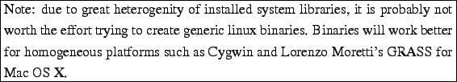
It is possible to create an extension package that will
If not done yet, unpack the extension files into a directory:
Create a new directory on the same level as the src directory. For an appropriate name, follow the guidelines in section 4.12. In our Cygwin example, this would be cygwin. In this directory:
Now, since we are preparing a binary distribution for the sake of people who do not have any development tools installed, we need to supply them with a copy of the GNU make tools, since this is the tool that will take care of the actual installation. What we need is really just the program make. We will copy it into a folder bin under our new directory. In our example, then the copy would go into cygwin/bin.
The skeleton extension package already has copies of make for Cygwin and Mac OS X in place. If you need them for another architecture, download sources from http://www.gnu.org/software/make/ and compile the appropriate binaries.
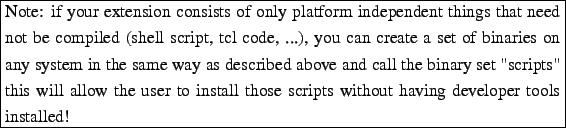
1. make sure all ASCII files in the top-level extension directory have the necessary information (licensing!).
2. Compile binaries that you may wish to provide for those poor people who cannot afford C development tools
3. Clean the sources of compiled binaries (this will not affect binaries that you wish to provide and copied into their individual directories).
4. If not done yet, delete the example module directory src/raster/r.example. And remove it from the list of subdirs in src/raster/Makefile.
5. Pack everything into an archive using GNU tar and gzip.
6. Announce your shiny new extension on the appropriate GRASS mailling list!
SHORTCOMINGS:
GEM is not very well-suited to install add-ons consisting of just a single module. This would need an entire extension with the whole shebang for a single module! I is assumed, that people who program for a GIS as a rule produce more than just one module for a certain purose and that these can well be grouped into extensions.
Please do not use anything fancy for your extension's name (as stored in the name file in the toplevel directory of your extension): no special characters, no whitespaces (including simple ``space''). Use the same restrictions any sane programmer would use for file naming. This ensures that GEM can always correctly parse your extension's name.
The recommended way to package an extension is to use GNU tar and gzip utilities as these will normally be available on any OS running GRASS. I recommend you use .tar.gz as file extension:
Check the GRASS HTML documentation and follow its style! Please provide good documentation for your individual modules as well as some brief and detailed information about the intended use, functionality and shortcomings of your extension (files description and info, respectively). HTML man pages for individual modules have to be named description.html and copied into the respective module's source code directory.
Use an HTML manual page of an existing GRASS 6.1 module for a template.
At the top of your description.html file, right after the <h2>NAME</h2> tag, include a line like this (user lowercase for the <em> </em> tags!):
<em><b>r.modulename</b></em> - Description of module in one line.
This line will be displayed right after the link to your module in the documentation index and will make it easier for the user to find what he needs.
Suggested folder names for binary distributions:
Mac OS X: macosx
Cygwin: cygwin
Linux (glibc 2.2): linux22
Linux (glibc 2.3): linux23
Shell scripts: scripts
Name the Toplevel menu item in your menu files (entries-gisman and entries-gisman2) the same as the Extension. This will make things much clearer for the user!
If you want to run GRASS under Mac OS X you can install Lorenzo Moretti's binaries. They are frequently updated and easy to install. GEM has been tested for this version of GRASS and works well with it.
In order to get this working, you need to install some additinal software from the Mac OS X install media. Just download from http://wwwamb.bologna.enea.it/forgrass/ and follow the instructions in the documentation that comes with the program files.
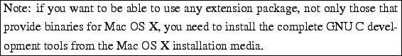
If you are using Lorenzo's binaries, the path to GRASS for any GEM operation will be:
/Applications/Grass/grass60.app/Contents/Resources/grass-6.0.0
or
/Applications/Grass/grass61cvs.app/Contents/Resources/grass-6.1.cvs
if you decided to also install Lorenzo's copy of the CVS version.
I cannot provide any information about compiling GRASS from sources for Mac OS X as I do not have access to such a machine.
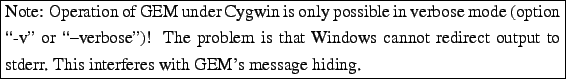
Although there is now work underway to create a native Win32 version of GRASS, for now the only way to get it running is to use the Cygwin emulation layer. For instructions on how to do this, see http://geni.ath.cx/grass.html.
Some additional hints about setting up Cygwin:
CygwinGRASS (https://www.geographie.uni-freiburg.de/ mlechner/CygwinGRASS/) is nice because it has all you need to install and use GRASS under Windows on one CD. Unfortunately, it has not been updated for a while and now contains fairly outdated versions of GRASS. See the document on the CD for installation instructions.
Some hints regarding the setup:
Blue items are directories, green ones are files.
README
authors, bugs, commands, depends, description, entries-gisman, entries-gisman2, headers, id, info, libs, license, name, post, uninstall, version
src [, cygwin, macosx, other-architecture, ...]
COPYING
README
REQUIREMENTS.HTML
Makefile, config.guess, config.sub, onfigure, configure.in, install-sh
db, demolocation, display, general, imagery, include, lib, man, paint, ps, raster, raster3d, scripts, sites, tools, vector, visualization
GEM exports three environment variables that point to the directories storing GRASS 6 headers and libs and to the install location (e.g. /usr/local/grass-6.2.0):
GINSTALL_INC
GINSTALL_LIB
GINSTALL_DST
These have been added to the makefiles so that externally compiled modules are able to see those GRASS headers and libs they need.
The following is a protocoll of changes between the configure script and makefiles in the GEM skeleton extension and the default GRASS files (version 6.2.0, Dec. 3rd 2006).
Everything that checks for optional system libraries and could cause configure to fail went has been set to default to ``no''. This means that extensions that have to check for optional system libraries may have to set these defaults differently or even add custom checks.
By default, the GRASS configure script tries to set up GDAL support and fails, if the GDAL libs and headers are not present, unless -without-gdal was given as a configure option. Since not many extensions are expected to make direct use of the GDAL C api, the GDAL check has been changed so that GDAL support is not set up per default, unless explicitely specified:
if test "${with_gdal+set}" = set; then
withval="$with_gdal"
:
else
with_gdal=no
fi
L28: INST_DIR is set according to GINSTALL_DST which is exported by GEM.
L39: SUBDIRS =: deleted the following: doc, gem, gui, misc,
L61: FILES =: deleted all files from the list
L230: install target real-install: commented out everything that seems not strictly necessary for a module installation and might interfere with the user's GRASS installation. Now exits with error code ``1'' on write permission problems. This can be caught by GEM and dealt with. Only creates error.log if a module did not compile. This is used to check for compilation errors and abort, if necessary.
L253: commented out stuff for creating GRASS startup script
L256: comment out everything relating to GEM installation
L39: added ...
EXE_SUFFIX = ".exe"
endif
L45: added -I$(GINSTALL_INC) to ARCH_INC
L51: change to: ARCH_LIBDIR = $(GINSTALL_LIB)
L57: ARCH_LIBPATH = -L$(ARCH_LIBDIR) -L$(GINSTALL_LIB)
L82: added $(GEM_C_OPTS) to CFLAGS
L91-94: commented outlinking of fmode.o object, as this currently breaks cross-compilation!
L77-79: the path to the HTML docs is now expanded with /extensions/<extensionName>. The name for the extension is read from GEM_EXT_NAME which is exported by GEM. A new link to the extension's main HTML index is inserted into the HTML page footer.
L82-90: this makes a slightly different version of the HTML pages to go into the extension's HTML folder docs/extensions/$(GEM_EXT_NAME) (with adjusted relative links). GEM_EXT_NAME is exported by the GEM installer tool.
L105: added $(GINSTALL_LIB) to definition of LD_LIBRARY_PATH_VAR .
Replace $(GRASS_VERSION_NUMBER) with $(GEM_EXT_VERSION), as this should be the version of the extension, not the GRASS base install:
L6: SHLIB = $(ARCH_LIBDIR)/$(SHLIB_PREFIX)$(SHLIB_NAME).$(GEM_EXT_VERSION)$(SHLIB_SUFFIX)
L18: $(SHLIB): $(SHLIB_OBJS)
L40-61: commented out everything that seems not strictly necessary for a module installation and might interfere with the user's GRASS installation.
L15: expand HTML with /extensions/$GEM_EXT_NAME (exported by GEM). The HTML default text has been altered in many places to reflect its new function for describing extensions. GEM also exports the following variables to enrich the HTML default text:GEM_EXT_VERSION (extension's version number).
L38-67: Replaced with intro text for GRASS extensions.
L147: Replaced GRASS with extension header for module index.
L211: see above.
L230: see above
L253: comment out GEM special comment
Possible ACTIONs are:
-i, -install=EXT install a GRASS extension
-u, -uninstall=EXT remove an extension from GRASS
-q, -query=EXT display information about extension/list installed
-d, -details=EXT display additional details about an extension
-c, -clean=EXT clean extension's source code directories
-t, -test=EXT configure and compile extension, but don't install
-l, -license=EXT show copyright information for an extension
-r, -restore recreate HTML links and GIS Manager entries
-h, -help display this help and exit
-V, -version output version information and exit
Possible OPTIONs are:
-g, -grass=PATH path to GRASS installation dir
-b, -binary=NAME no compilation: use binary files for system NAME
-f, -force force action, regardless of dependencies
-v, -verbose display detailed status information
-s, -skip-config skip configure script
-x, -config-opts=OPTS pass OPTS to configure script
-o, -options=OPTS options to pass to the C compiler/linker
-C, -config-cmd=CMD Define custom 'configure' command (default=configure)
-m, -make-cmd=CMD Define custom 'make' command (default=make)
This document was generated using the LaTeX2HTML translator Version 2002-2-1 (1.71)
Copyright © 1993, 1994, 1995, 1996,
Nikos Drakos,
Computer Based Learning Unit, University of Leeds.
Copyright © 1997, 1998, 1999,
Ross Moore,
Mathematics Department, Macquarie University, Sydney.
The command line arguments were:
latex2html -split 0 -show_section_numbers GEM-Manual.tex
The translation was initiated by on 2007-03-08